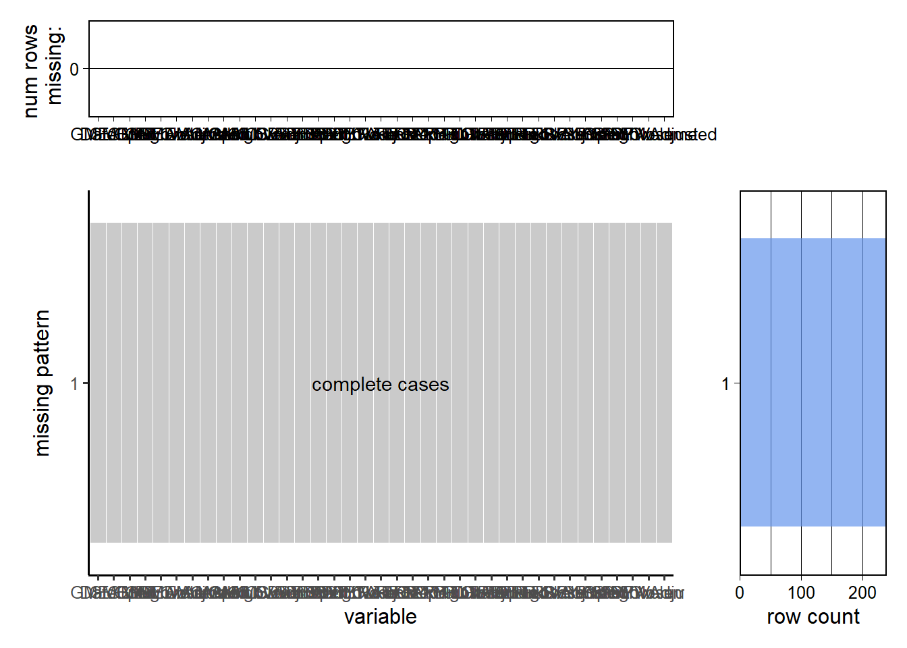
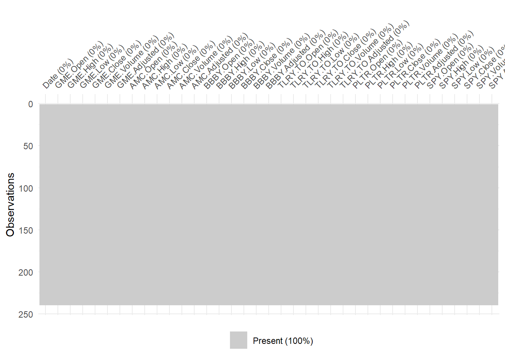

Chapter 3 Data
3.1 Sources
As explained in the proposal we will work with financial meme stocks. The stocks we chose are the following: GME (GameStop Corp), AMC (AMC Entertainment Holdings Inc), BBBY (Bed Bath & Beyond Inc), TLRY (Tilray Inc) and PLTR (Palantir Technologies Inc). They are all belong to either the NYSE or to the NASDAQ.
We will use the following packages for getting the data :
## [1] "quantmod" "tidyquant" "pylr" "dplyr" "redav"
## [6] "tidyverse" "remotes" "naniar" "rollRegres" "zoo"
## [11] "plotly" "tseries" "ggplot2" "reshape2" "lubridate"
## [16] "tidyr"We then use the QuantMod package to obtain our data. We use a date range from January 1, 2022 to the most recent date (December 14, 2022) for our stocks to get our YTD (Year to Date) data. Let’s see what values does the quantmod packages returns.
## [1] "GME"## [1] "AMC"## [1] "BBBY"## [1] "TLRY.TO"## [1] "PLTR"## [1] "SPY"## GME.Open GME.High GME.Low GME.Close GME.Volume GME.Adjusted
## 2022-01-03 37.3075 39.8450 37.3025 38.2100 5654800 38.2100
## 2022-01-04 38.0425 38.2475 35.7625 37.2275 7339600 37.2275
## 2022-01-05 37.0975 37.2125 32.2875 32.3425 13585600 32.3425
## 2022-01-06 33.2100 34.4250 30.2850 32.7575 24206000 32.7575
## 2022-01-07 39.9425 40.0775 33.1250 35.1550 48549200 35.1550
## 2022-01-10 33.7475 33.9225 30.0000 32.7875 22048000 32.7875As shown above, quantmod provides us the values of “Open”, “High”, “Low”, “Close”, “Volume” and “Adjusted” and Date for every day for each stock.
Let’s check the class of our data.
## [1] "xts" "zoo"Let’s transform our xts into tables:
## # A tibble: 6 × 6
## GME.Open GME.High GME.Low GME.Close GME.Volume GME.Adjusted
## <dbl> <dbl> <dbl> <dbl> <dbl> <dbl>
## 1 37.3 39.8 37.3 38.2 5654800 38.2
## 2 38.0 38.2 35.8 37.2 7339600 37.2
## 3 37.1 37.2 32.3 32.3 13585600 32.3
## 4 33.2 34.4 30.3 32.8 24206000 32.8
## 5 39.9 40.1 33.1 35.2 48549200 35.2
## 6 33.7 33.9 30 32.8 22048000 32.8The dates are now missing but we can add them by using the index on our initial stocks :
DATE <- index(AMC)We can now add these dates to our tables :
## # A tibble: 6 × 7
## Date AMC.Open AMC.High AMC.Low AMC.Close AMC.Volume AMC.Adjusted
## <date> <dbl> <dbl> <dbl> <dbl> <dbl> <dbl>
## 1 2022-01-03 27.4 28.1 26.4 26.5 26740900 26.5
## 2 2022-01-04 26.7 26.7 24.6 25.5 33347900 25.5
## 3 2022-01-05 25.2 25.3 22.4 22.8 45172100 22.8
## 4 2022-01-06 23.0 23.8 20.8 22.5 59112700 22.5
## 5 2022-01-07 23.6 24.3 22.4 23.0 49481000 23.0
## 6 2022-01-10 22.4 22.9 21.2 22.8 37784000 22.83.2 Cleaning / transformation
First, we have to check if there are any missing values for each stock.
sum(is.na(gme))## [1] 0sum(is.na(amc))## [1] 0sum(is.na(bbby))## [1] 0sum(is.na(tlry))## [1] 0sum(is.na(pltr))## [1] 0sum(is.na(spy))## [1] 0There are no missing values in our stocks which is good for our data visualization pipeline. We will now transform these stocks prices to calculate a new value: the return.
## # A tibble: 6 × 7
## Date GME.Open GME.High GME.Low GME.Close GME.Volume GME.Adjusted
## <date> <dbl> <dbl> <dbl> <dbl> <dbl> <dbl>
## 1 2022-01-03 37.3 39.8 37.3 38.2 5654800 38.2
## 2 2022-01-04 38.0 38.2 35.8 37.2 7339600 37.2
## 3 2022-01-05 37.1 37.2 32.3 32.3 13585600 32.3
## 4 2022-01-06 33.2 34.4 30.3 32.8 24206000 32.8
## 5 2022-01-07 39.9 40.1 33.1 35.2 48549200 35.2
## 6 2022-01-10 33.7 33.9 30 32.8 22048000 32.8We can also calculate the rolling beta and alpha of a stock as well. This will be important, as beta tells us how an individual stock performs relative to the market, while alpha tells us the stock’s excess return. We use a rolling window of 30. We also get the simple moving average (SMA) of our newly created portfolio to detected long-term trends. Finally, we calculate RSI (we base our code off this website: https://bookdown.org/kochiuyu/technical-analysis-with-r-second-edition2/relative-strength-index-rsi.html) to compare the performance of our portfolio with the SP500
## [1] "Portfolio Moving Average (First 5 Values):"## [1] 85.40075 84.84875 84.40192 84.11992 83.71708 83.05742## [1] "SPY Moving Average (First 5 Values):"## [1] 453.5700 452.5163 451.4847 450.4407 449.3170 448.0997## rowname (Intercept) spy_close_log Date a_value beta_value
## 234 234 1.0882913 0.4728091 2022-12-06 1.0882913 0.4728091
## 235 235 0.9456553 0.4956148 2022-12-07 0.9456553 0.4956148
## 236 236 0.9689239 0.4911233 2022-12-08 0.9689239 0.4911233
## 237 237 0.5835717 0.5546699 2022-12-09 0.5835717 0.5546699
## 238 238 0.9112997 0.4986215 2022-12-12 0.9112997 0.4986215
## 239 239 1.4408603 0.4085211 2022-12-13 1.4408603 0.4085211## DATE portfolio_open portfolio_high portfolio_low portfolio_close
## 1 2022-01-03 107.0075 111.9040 104.9625 107.4900
## 2 2022-01-04 107.3025 108.5075 100.8925 104.3475
## 3 2022-01-05 103.3975 104.4905 92.9675 93.6025
## 4 2022-01-06 96.7000 100.3450 88.8000 94.5175
## 5 2022-01-07 103.6625 107.0375 94.4100 97.7350
## 6 2022-01-10 94.6375 96.6225 87.7700 94.3775## [1] "First 5 Values of Portfolio RSI: "## [1] 14.285714 14.285714 14.285714 7.142857 7.142857 14.285714## [1] "First 5 Values of SPY RSI: "## [1] 28.57143 28.57143 28.57143 28.57143 35.71429 42.85714We now have all the required information for starting our data visualization!
3.3 Missing Value Analysis
Although we have covered that there is missing data, we can visualize it by using a missing pattern graph, which can be found below.Please note that for the purposes of finding missing data, we merge the datasets to see if their are overarching patterns in the missing data.

Although the labels are messy, one thing is clear: every single column is a complete case, which means that we do not have missing data throughout all our columns in all of our different stocks. We can also have an alternate view by using a heatmap of missing views: 
Again, we see that out of all our observations, all of them are present, signifying that there are no missing values in our data.